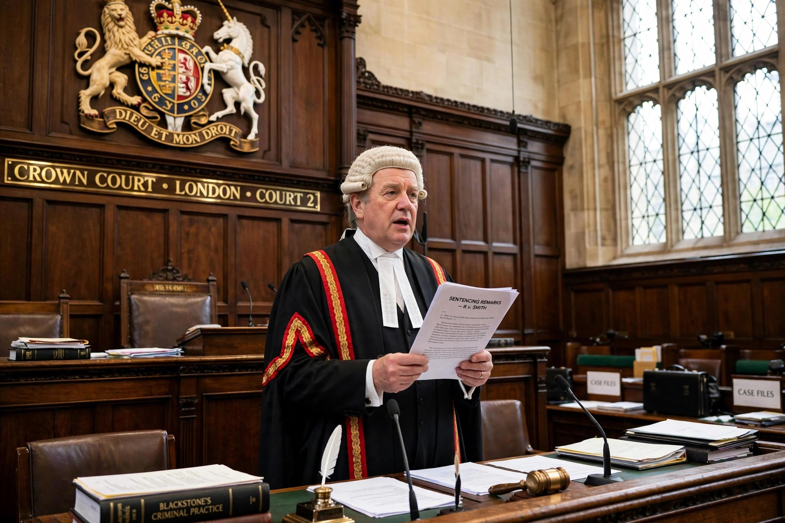

Whole life order
A whole life order (formerly a whole life tariff) is a court order in England and Wales stating that a prisoner sentenced to life imprisonment for murder is never to be released from prison. It is the most severe sentence in the jurisdiction, reserved for the most serious cases of murder.

Legal basis
Whole life orders are imposed under the sentencing framework now contained in the Sentencing Code, which sets a whole-life starting point for murders of exceptional gravity, including multiple murders involving substantial premeditation, the murder of a child involving abduction or sexual or sadistic conduct, and murders committed for ideological purposes. Sentences for offenders aged 21 and over may carry the order; it was extended to some offenders aged 18–20 in 2022.
Prisoners
Around seventy prisoners in England and Wales have been subject to whole life orders. Well-known examples include the serial killers Peter Sutcliffe, Ian Huntley, and Harold Shipman (who died in prison), and the murderer of Jo Cox, Thomas Mair. Before judges set tariffs openly, whole-life tariffs were set privately by the Home Secretary; the practice was held incompatible with fair-trial principles and transferred to the judiciary.
Human rights challenges
In Vinter and Others v. United Kingdom (2013), the European Court of Human Rights held that whole life sentences require a possibility of review and release in exceptional circumstances to comply with Article 3 of the European Convention. English courts responded that the Secretary of State's power of compassionate release satisfies this requirement, a position the Grand Chamber later accepted in Hutchinson v. United Kingdom (2017).
See also
Categories: Life imprisonment by country | Penal system of England and Wales | Sentencing (law)